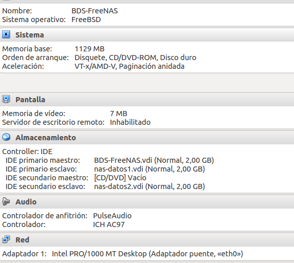
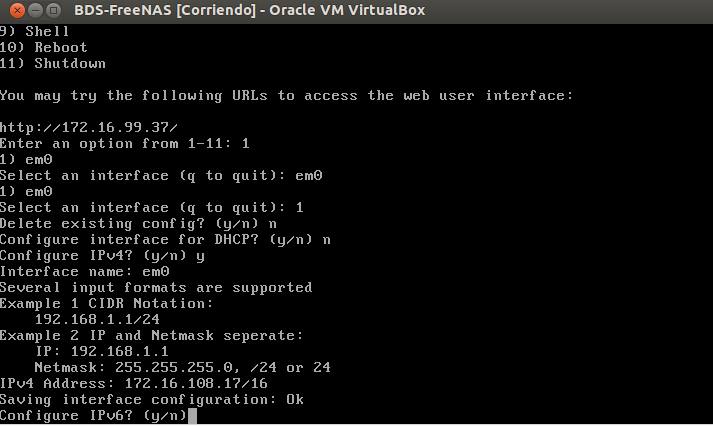
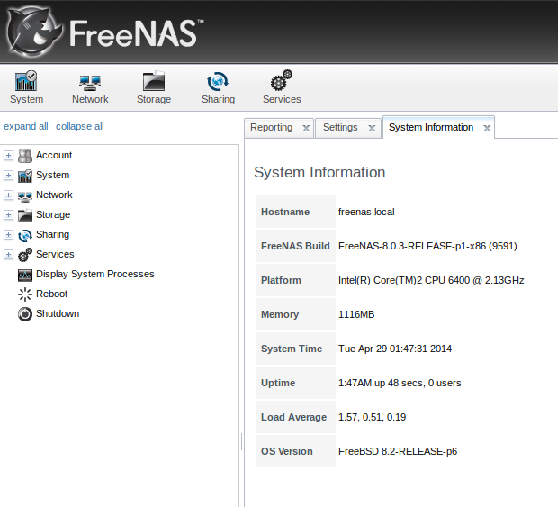
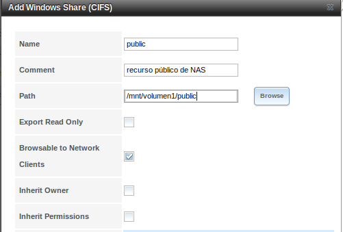

- Módulo: Fundamento de Hardware
- Título del trabajo Almacenamiento Nas
- Componentes del grupo: Silvano Pérez Yanes
- Curso Académico: 2013/2014
- Fecha de entrega: 5 de Mayo de 2014
Para esta actividad, crearemos una maquina virtual FreeNas, con tres particionesde 2GB; el FreeNas, en mi caso será de 64-bits, por lo que tendrá 1128MB de RAM.
Las tres particiones creadas serviran: la primera para la instalación y las dos otras como un único volumen en RAID1 o en espejo.
A continuación, procedemos a la configuración del FreeNas, en este caso, la configuración se realiza en un terminal, en el cual tenemos que configurar todos los aspectos importantes del FreeNas para su correcto funcionamiento.
Ahora, procedemos a la creación de volumenes, para ello hay que dirigirse a un navegador e introducir el url que te da el FreeNas en su terminal, el cual te servira para entrar en la configuración del FreeNas en modo gráfico.
Una vez creados los volumenes, los configuramos para que se puedan conpartir mediante windows y poder almacenar datos en cualquier maquina windows.
